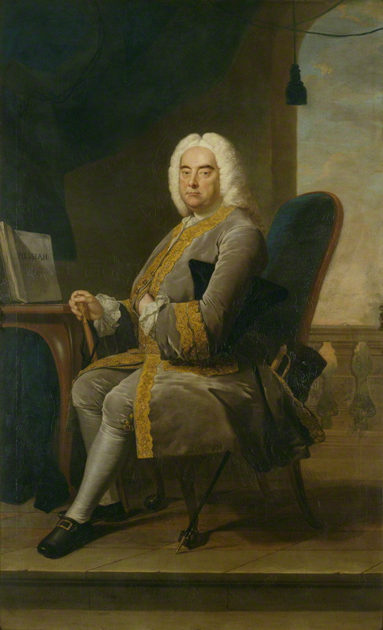

Tchaikovsky's Empire: A New Life of Russia's Greatest Composer
Simon Morrison
Pyotr Ilych Tchaikovsky
Part I: Local and Regional Matters
Part II: Nationalism
Part III: Imperialism
Part IV: Matters of Life and Death
